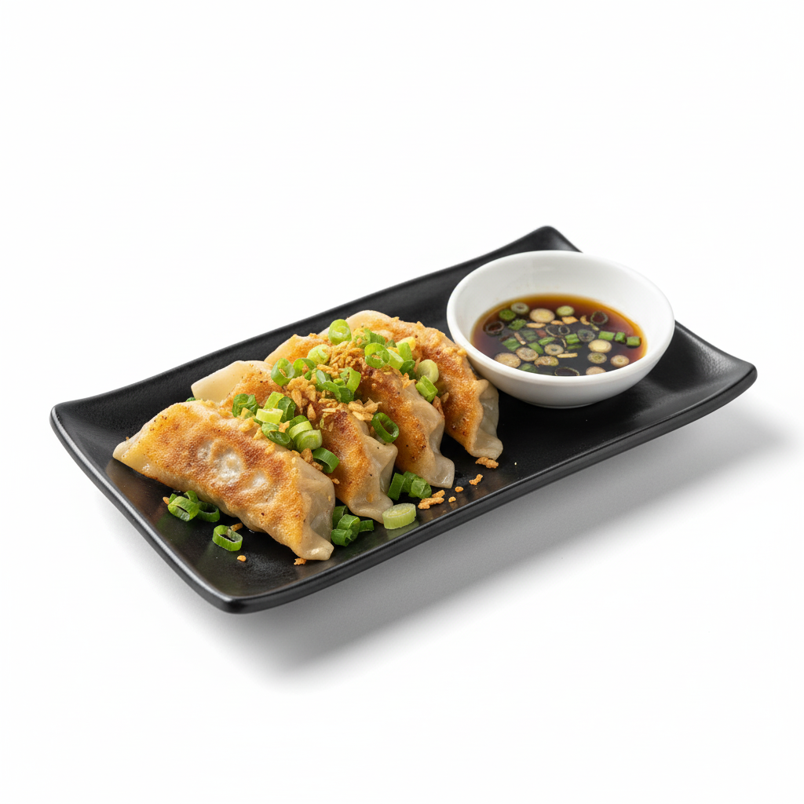

Tteokbokki
Tteokbokki (Spicy Rice Cakes) Tteokbokki is a wildly popular Korean street food made primarily from cylindrical tteok (chewy rice cakes), which are stir-fried in a thick, vibrant red sauce based on gochujang (Korean chili paste). It is often supplemented with ingredients like eomuk (fish cakes), boiled eggs, and scallions. Originally a dish consumed by royalty and later a staple in everyday life, it is now best known as a comforting and intensely flavorful street snack, characterized by its spicy-sweet taste and the uniquely satisfying, chewy texture of the rice cakes.
Price : 80฿